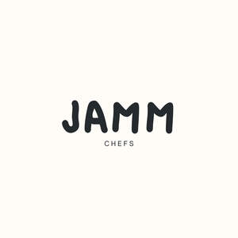

Trade Mark Journal No.2025/043 24 October 2025
UK00004278301 15 October 2025 (21,30,40,41,43)

- Class 21
- Cutting boards for the kitchen; Kitchen cutting boards; Chopping boards; Carving boards; Knife boards; Cheese boards; Kitchen utensils; Household or kitchen utensils; Kitchen containers.
- Class 30
- Sauces; Sauces [condiments]; Salts, seasonings, flavourings and condiments; Seasonings.
- Class 40
- Food and beverage treatment; Pasteurising of food and beverages; Food and drink preservation; Food processing; Food smoking; Food canning.
- Class 41
- Training in catering; Hospitality services (entertainment); Corporate entertainment services; Corporate hospitality (entertainment); Entertainment booking services; Wedding celebrations (Organisation of entertainment for -); Organising of entertainment; Organising of recreational events; Organisation of cultural events; Organisation of educational events.
- Class 43
- Catering; Catering services; Mobile catering; Catering services for hospitality suites; Catering services for providing European-style cuisine; Outside catering; Mobile catering services; Outside catering services; Catering services for providing Japanese cuisine; Catering services for providing Spanish cuisine; Rental of catering equipment; Catering services for the provision of food; Providing food and drink catering services for convention facilities; Providing food and drink catering services for exhibition facilities; Catering of food and drinks; Food and drink catering for banquets; Catering for the provision of food and beverages; Catering services specialised in cutting ham by hand, for weddings and private events; Providing food and drink catering services for fair and exhibition facilities; Consultancy services in the field of food and drink catering; Organisation of catering for birthday parties; Charitable services, namely providing food and drink catering; Food and drink catering for institutions; Food and drink catering for cocktail parties; Providing restaurant services; Banqueting services; Restaurant services; Take-away restaurant services; Restaurant services incorporating licensed bar facilities; Providing banquet and social function facilities for special occasions; Services for providing food; Bartending services; Mobile restaurant services; Take-away food services; Personal chef services; Serving food and drink for guests in restaurants; Corporate hospitality (provision of food and drink); Arranging of wedding receptions [food and drink]; Food preparation services; Hospitality services [food and drink]; Snack-bar services; Services for providing food and drink.
JAMM PRIVATE DINING LTD